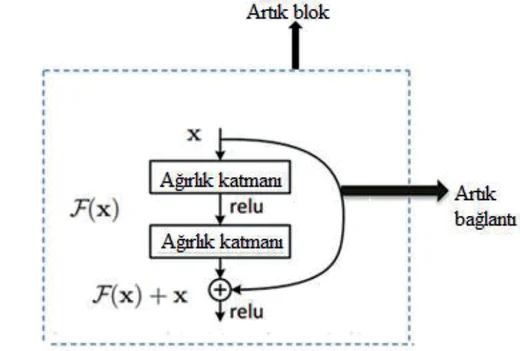
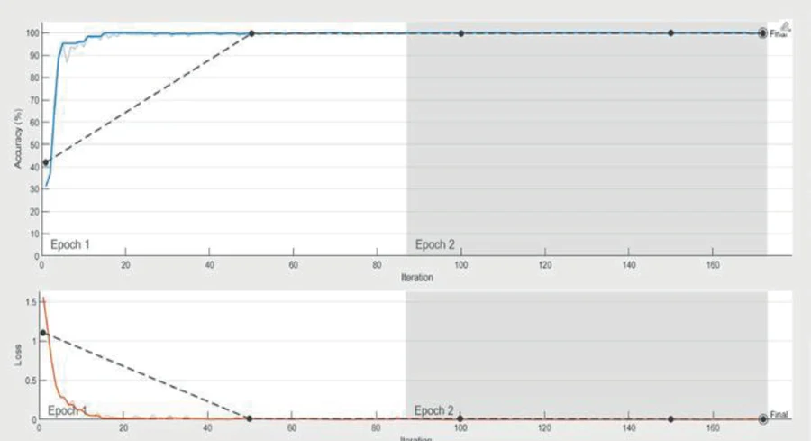

ICLEMAS 2025 · 11th International Azerbaijan Congress on Life, Engineering, Mathematical, and Applied Sciences
Comparison of the Performance of ResNet-50 and ShuffleNet Deep Learning Algorithms in Classification of Hazelnut Fruit
Summary
At a Glance
A deep, heavy network against a small, mobile one on the same hazelnut photos: ResNet-50 is marginally more accurate, but ShuffleNet is recommended because it is faster and the gap is tiny.
177 layers in MATLAB, residual connections, ImageNet-pretrained.
Group convolutions and channel shuffle for devices with little computing power.
For real-time sorting, speed matters and the accuracies are close: choose ShuffleNet.
Introduction
Why Sort Hazelnuts Automatically?
- Before storage, bad nuts and inner nuts must be separated: bad nuts lower the yield, inner nuts can spoil in storage.
- AI can sort nuts from images by quality, size and colour, faster and more accurately than manual sorting.
- A CNN pipeline: build a dataset, clean and normalize it, resize the images, split into training and test sets, train, then measure performance on new data.
Does a large network beat a lightweight one enough to justify its cost on this task?
Introduction · Related Work · Interactive
Earlier Hazelnut Classifiers
Results as reported by each study; tasks and data differ. Click a column header to sort.
| Study | Task | Features / method | Reported result |
|---|---|---|---|
| Bayrakdar et al., 2015 | 3 types (Tombul, Sivri, Badem) | diameter, radius, area | 84% accuracy |
| Koç et al., 2020 | 3 cultivars, in shell | random forest (bagging) / DL4J | 83% / 71% accuracy |
| Keleş and Taner, 2021 | 11 varieties | physical, mechanical and optical features; discriminant analysis / ANN | up to 92.7% / 92.7% |
| This study | good, bad, inner | ResNet-50 and ShuffleNet on photos | 99.97% / 99.94% test accuracy |
Materials and Method · Dataset · Fig. 2
The Hazelnut Dataset


Fig. 2: class counts and sample images (dataset by Güneş, 2022)
- Rear phone camera, 12 MP; photos at 3024×3024 on a platform, one nut per image.
- Expert labels: 519 bad, 535 good, 523 inner hazelnuts.
- 10 photos per nut from different angles: 15,770 images.
- Cropped to 1000×1000, then resized to 224×224, the input size of both networks.
Materials and Method · ResNet-50 · Fig. 1
ResNet-50: Learning the Residual

- The block's input skips the convolutions and is added to their output: H(x) = F(x) + x.
- Layers only learn the change F(x); gradients flow through the shortcut, so very deep networks train well.
- Batch normalization after each convolution; global average pooling before the fully connected layer.
- Pretrained on over a million ImageNet images in 1,000 categories; won ILSVRC 2015.
- In MATLAB: 177 layers for the 50-layer network; input 224×224.
Materials and Method · ShuffleNet · Interactive
ShuffleNet: Cheap Convolutions That Still Mix
- Pointwise group convolution cuts the cost of 1×1 convolutions.
- Channel shuffle lets the groups exchange information.
- Cheaper layers allow wider feature maps, which small networks need.
Diagram of the shuffle operation (Zhang et al., 2018), not the trained network.
Findings and Discussion · Figs. 3–4 · Interactive
Training Runs in MATLAB

- MATLAB, data shuffled, split stated as 30% training and 70% test.
- Two epochs; both networks pass 95% accuracy early in the first epoch and the loss falls close to zero.
Findings and Discussion · Results
Accuracy and Errors
Lighter bars: training accuracy; darker bars: test accuracy. Red dots: misclassified images in each confusion matrix (11,039 images). The axis starts at 99.7%.
Findings and Discussion · Figs. 5–6 · Interactive
Confusion Matrix Explorer
Counts from the paper's matrices; metrics on this slide are computed from them for the chosen class against the other two.
Conclusions and Recommendations
Which Network on the Sorting Line?
ResNet-50
- slightly better: 99.97% test accuracy, 3 errors
- reported specificity 1 and F1 0.9999
- deep and heavy: more computation per image
ShuffleNet
- 99.94% test accuracy, 7 errors
- observed to run faster on this dataset
- designed for devices with limited computing power
Conclusions
Check Questions
- What does the shortcut in a residual block add, and why does it help deep networks?
- What does ShuffleNet's channel shuffle do?
- How many images did each network misclassify, and which pair of classes causes most errors?
- Why can a slightly less accurate model be the better choice?
- What would make the speed argument stronger?
Show answers
- It adds the input x to the block output; gradients pass through it, so deep networks train well.
- It interleaves channels after a group convolution so that the groups exchange information.
- ResNet-50 3, ShuffleNet 7 of 11,039; most errors are between inner and good nuts.
- On a real-time line, speed and hardware cost matter, and the accuracy gap here is only 0.03 points.
- Measured inference times and model sizes on the target hardware.
References
Selected References
- He, K., Zhang, X., Ren, S., Sun, J. (2016). Deep residual learning for image recognition. CVPR, 770–778.
- Zhang, X., Zhou, X., Lin, M., Sun, J. (2018). ShuffleNet: An extremely efficient convolutional neural network for mobile devices. CVPR, 6848–6856.
- Güneş, E. (2022). Hazelnuts. Mendeley Data, V2. doi:10.17632/dvvx6kst3f.2
- Bayrakdar, S. et al. (2015). Determination of type and quality of hazelnut using image processing techniques. SIU 2015, 616–619.
- Keleş, O., Taner, A. (2021). Classification of hazelnut varieties by using artificial neural network and discriminant analysis. Span. J. Agric. Res., 19(4), e0211.
See the full paper for the complete reference list. Figures on these slides are from the paper.